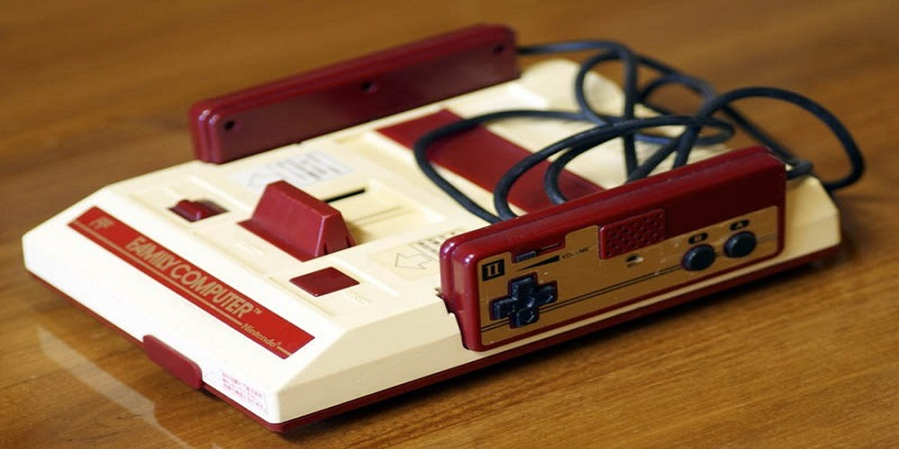
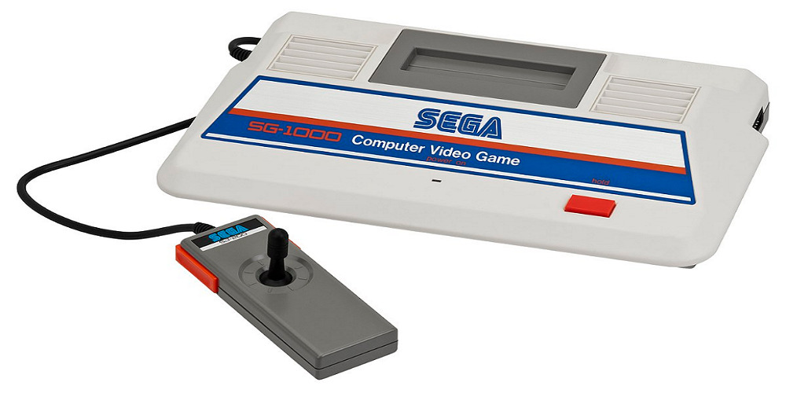

Tercera Generación 1983 - 1987
La tercera generación (también conocida como era de los 8 bits, aunque, como veremos, sin razón real) empezó, de alguna manera, el 15 de Julio de 1983 cuando vieron la luz en Japón tanto la Nintendo Family Computer (también conocida como Famicom) como la Sega SG-1000.
La tercera generación trajo dos cambios drásticos; el primero, el cambio de la hegemonía americana para ceder el testigo a la japonesa (representada por la caída de Atari y la expansión de Nintendo e incluso Sega). El segundo tuvo lugar a través de sus juegos, que cambiaron las pantallas únicas (es decir, los fondos fijos – imaginad un Space Invaders) por pantallas con scrolling, como un Super Mario Bros. Ese cambio fue una revolución en el diseño de videojuegos.
Famicom
Consola de 8 bits que usa cartuchos intercambiables, estaba diseñada, de forma intencional, para que pareciese un juguete, con colores rojos y blancos y mandos fijados a la consola, alojados a los lados para su almacenamiento.
SG 1000
Fue la primera videoconsola de sobremesa desarrollada por Sega. La consola estaba equipada con un 8-bit Zilog Z80 central a 3,58 MHz for the SG-1000 and SG-1000 II, -el mismo de Master System y Game Gear que también está en Mega Drive– y a 4 MHz for the SC-3000. Tenía un procesador de video Texas Instruments TMS9928A, que mostraba 16 colores de una paleta de 32 colores y un Texas Instruments SN76489 para el sonido.
SG1000-Mark II
Es un modelo actualizado de la consola de videojuegos SG-1000 lanzada por Sega en 1984. Es internamente idéntica a la SG-1000 original, pero luce un nuevo diseño exterior. En contraste con el SG-1000 original, que presentaba un controlador de joystick cableado con un puerto de controlador adicional opcional, el SG-1000 II cuenta con dos controladores de joystick desmontables.

SG 1000-Mark III
Es una consola de videojuegos de 8 bits basada en cartuchos y tarjetas, que fue desarrollada por Sega. El sistema fue rediseñado para venderlo en el mercado de Estados Unidos con el nombre de Sega Master System en junio de 1986, un año después del lanzamiento de la Nintendo Entertainment System.

Atari7800
Sucesora de la consola Atari 5200 o supersystem, en un intento de Atari de recuperar su supremacía en el mercado de las videoconsolas frente a sus rivales locales Intellivision y Colecovision, y al desembarco japonés de la Sega Master System y Nintendo NES.